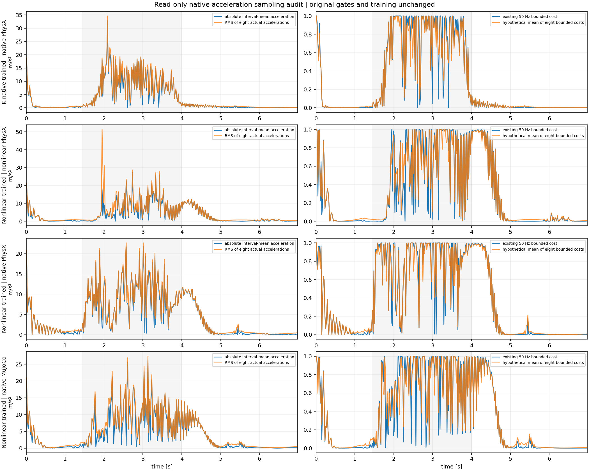

Read-only diagnostic using the completed nonlinear-policy comparison. No new training, reward change, friction sweep or task-gate change was performed.
The current term penalizes 1-exp(-((vz_end-vz_previous_end)/(0.02*5))²), with weight -0.1, once per 50 Hz control interval. The eight actual 400 Hz samples permit a counterfactual mean of eight bounded physical-acceleration costs. All 128 whole control intervals inside 1.44–4.00 s are retained. First post-reset rewards are unpenalized in training and excluded from these core intervals. Native evaluations disable random pushes and contain no hidden reset.
| Recorded case | Squared acceleration omitted by averaging | Existing bounded cost | Mean bounded 400 Hz cost | 50 Hz cost <.1 and fine mean >.5 windows |
|---|---|---|---|---|
| K_native | 12.6% | 0.6784 | 0.6587 | 1 |
| physx_nonlinear | 36.1% | 0.5568 | 0.5729 | 3 |
| physx_native | 8.6% | 0.7851 | 0.7795 | 0 |
| mujoco_native | 17.1% | 0.6680 | 0.6801 | 4 |
The unbounded squared acceleration obeys the exact decomposition mean(a²)=mean(a)²+variance(a). The bounded exponential cost does not satisfy the same ordering. In these recordings, its mean changes little and often saturates in the turn. Cancellation exists, but it is not demonstrated as the principal cause of contact interruptions; a new 400 Hz term is not established as a remedy.

The actual plot was inspected. This diagnostic uses the existing recorded COM world-Z velocity convention; no force integration, contact resimulation, actor evaluation or state correction occurs. Constant velocity, constant acceleration, zero-net alternating velocity and invalid-trace checks passed.
Native values and provenance · Main completed experiment, original gates and whole-body animation · Diagnostic source.
Reproduce in the existing NumPy/Matplotlib environment: python scripts/diagnose_vertical_smoothness_sampling.py --result results/ppo_k_nonlinear_tire_20261025_v2 --output-dir /tmp/tron1-vertical-sampling-new. The analysis refuses an existing destination and verifies the completed raw recordings, initial states, formal actor and exact height adapter source.